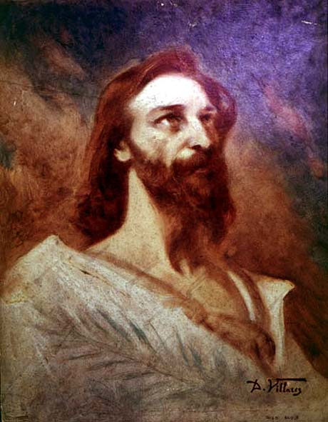

|
|  |
|
Décio Villares, Tiradentes
|
The monuments of the republic –most importantly, Décio Villares's memorial of Benjamin Constant on Rio de Janeiro´s Praça da República, and Eduardo de Sá's monuments to Floriano Peixoto (Deodoro´s presidential successor) at Rio and to Júlio de Castilhos, a republican politician from Rio Grande do Sul, at Porto Alegre– were complex politico-philosophical signifiers involving female allegories of the nation and of humanity, the new flag with its positivist symbology of 'order and progress', and a cast of historical characters that proposed a rereading of national history along the lines of a struggle for republican self-governance. The Constant monument, for instance, mobilises Christopher Columbus, the 'Republican martyr' Tiradentes, the 'father of Independence' José Bonifácio, to culminate in an image of Constant himself, as Minister of War, in the act of restituting war trophies to the President of Paraguay: the Republic –embodied in Constant– appears here as the culmination of a secular thrive towards positivism's 'religion of humanity' (as spelled out by the monument's own inscription), the fulfilment of the 'original promise' of discovery, which is manifested in the final reconciliation between Brazil and its republican neighbours, having shed the burdens of monarchies and tyrannies.
|